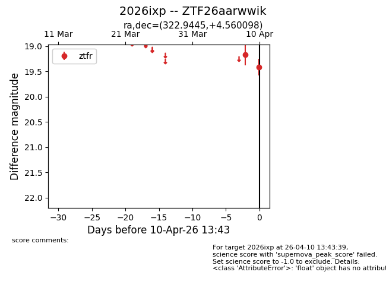
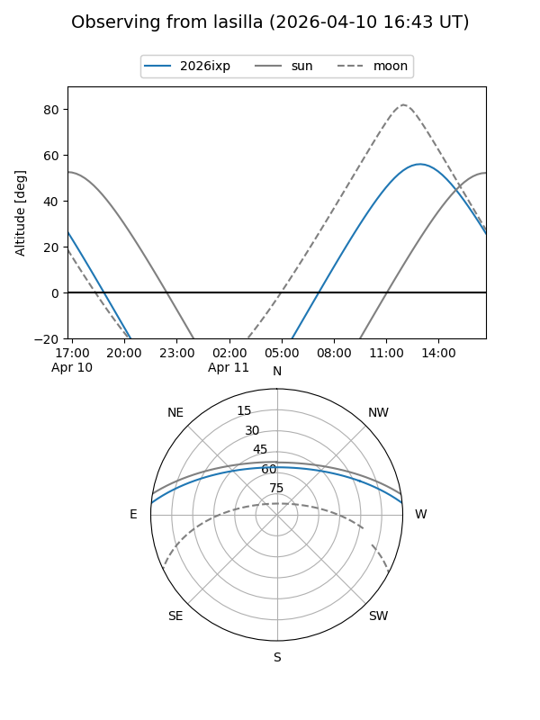
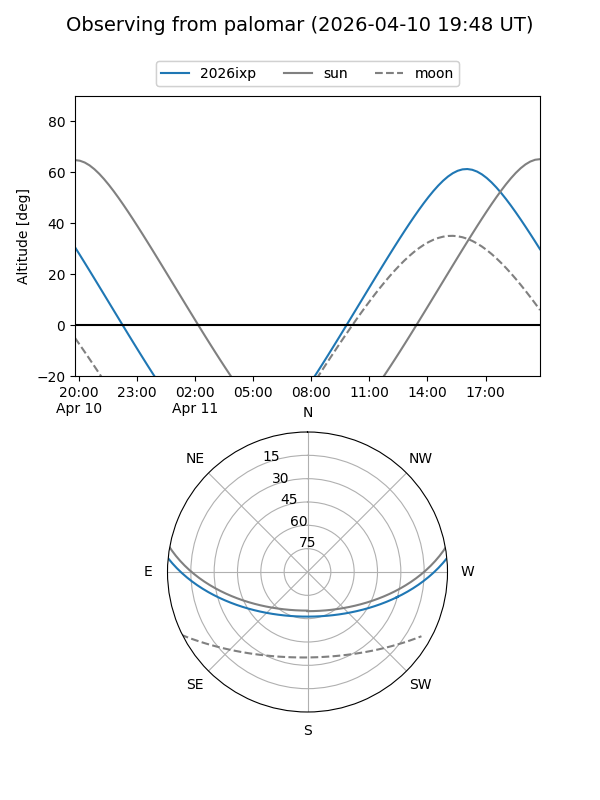
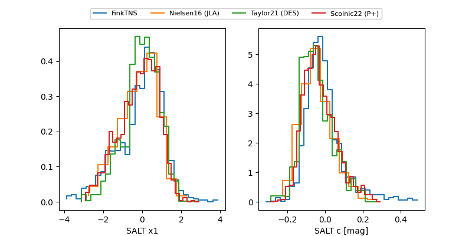

2026ixp
Target 2026ixp at 2026-04-10 13:52
Aliases and brokers:
FINK: link
Lasair: link
ALeRCE: link
TNS: link
YSE: link
alt names
ZTF26aarwwik (ztf,fink_ztf)
2026ixp (tns,yse)
Coordinates:
equatorial (ra, dec) = 322.9445,+4.56010
equatorial (HMS+DMS) = 21:31:46.67,+04:33:36.35
galactic (l, b) = (58.4119,-32.34507)
Flags:
Photometry:
last ztfr=19.42
2 ztfr detections
Lightcurve

Visibility


Additional plots
